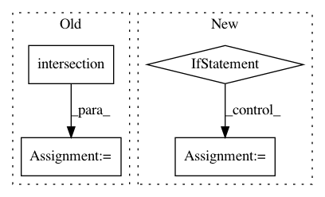

005968dcfbd2a8f70d8ea3957c8abba60a12492d,pliers/filters/video.py,FrameSamplingFilter,_filter,#FrameSamplingFilter#,38
Before Change
key=lambda i: diffs[i],
reverse=True)[:self.top_n]
frame_index = sorted(list(set(video.frame_index).intersection(new_idx)))
return VideoFrameCollectionStim(filename=video.filename,
clip=video.clip,
frame_index=frame_index)
After Change
super(FrameSamplingFilter, self).__init__()
def _filter(self, video):
if not isinstance(video, VideoStim):
raise TypeError("Currently, frame sampling is only supported for "
"complete VideoStim inputs.")
if self.every is not None:
new_idx = range(video.n_frames)[::self.every]
elif self.hertz is not None:
interval = video.fps / float(self.hertz)
new_idx = np.arange(0, video.n_frames, interval).astype(int)
new_idx = list(new_idx)
elif self.top_n is not None:
import cv2
diffs = []
for i, img in enumerate(video.frames):
In pattern: SUPERPATTERN
Frequency: 3
Non-data size: 4
Instances
Project Name: tyarkoni/pliers
Commit Name: 005968dcfbd2a8f70d8ea3957c8abba60a12492d
Time: 2018-05-15
Author: quinten.mcnamara@gmail.com
File Name: pliers/filters/video.py
Class Name: FrameSamplingFilter
Method Name: _filter
Project Name: sentinel-hub/eo-learn
Commit Name: 412dd41ebd8f3573ba5762a13f5e80d8244a1d89
Time: 2019-12-24
Author: jovan.visnjic@sinergise.com
File Name: core/eolearn/core/eodata.py
Class Name: EOPatch
Method Name: save_aws_new
Project Name: IDSIA/sacred
Commit Name: 17178a3849dea9c5b1f2b4d589c894a92c5d3726
Time: 2014-07-14
Author: klaus@idsia.ch
File Name: sacred/custom_containers.py
Class Name: DogmaticDict
Method Name: __init__